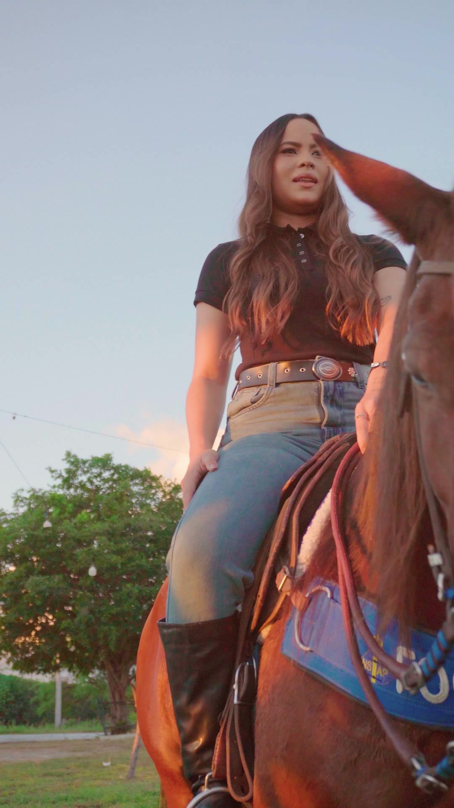

01 / Campanha de lançamentoParque José Julião DinizLançamento da Vaquejada do Parque José Julião DinizExplorar projeto INDEPENDENTE. CRIATIVA. ESTRATÉGICA.ALEXANDRIA / RN — BRASIL
ESTRATÉGIA É SÓ O COMEÇO.Seu próximo
Seu próximo
grande movimento.
Ideias que ganham forma.
Marcas que movem pessoas.
Da primeira conversa ao próximo capítulo.Vamos criar juntos
Entre ser visto
e ser lembrado,
existe uma boa ideia.
Encontramos o que torna sua marca única. E transformamos isso em estratégia, imagem e movimento.
Conheça a Cavalcante01 / PROJETOS SELECIONADOSFEITO PELA CAVALCANTE ↙
Feito para
ficar na memória.
Um recorte do nosso olhar. Projetos reais, para marcas com histórias próprias.
02 / O QUE FAZEMOSUMA DIREÇÃO. VÁRIAS POSSIBILIDADES.
O que sua
marca precisa
agora?
Um projeto pontual ou uma parceria contínua. Conectamos estratégia, criação e distribuição ao momento do seu negócio.
Vamos encontrar a direção01Estratégia & marcaPARA CONSTRUIR UMA POSIÇÃO CLARA
Definimos o que sua marca tem a dizer, para quem e como deve ser percebida.
- Diagnóstico de marca e presença digital
- Posicionamento e direção criativa
- Identidade visual e suas aplicações
- Planejamento de comunicação
02AudiovisualPARA MOSTRAR O VALOR DO SEU NEGÓCIO
Transformamos uma intenção em imagem, som e movimento. Do roteiro ao último corte.
- Conceito, roteiro e direção
- Captação e produção de vídeos
- Reels, campanhas e filmes de marca
- Cobertura e aftermovies de eventos
03Conteúdo & presençaPARA CONSTRUIR CONSISTÊNCIA
Uma presença que faz sentido para a sua marca e para as pessoas que você quer alcançar.
- Linha editorial e calendário de conteúdo
- Gestão de Instagram
- Design e conteúdo para redes sociais
- Roteiros, pautas e formatos de atração
04Mídia & performancePARA CONECTAR SUA OFERTA AO PÚBLICO
Distribuição com objetivo, criativos alinhados e acompanhamento para orientar cada ajuste.
- Planejamento de campanhas e investimento
- Gestão de tráfego pago
- Criação e teste de anúncios
- Acompanhamento e leitura de resultados
03 / NOSSO MÉTODOCRIATIVIDADE ENCONTRA DIREÇÃO.
O movimento certo.
Em cada etapa.
Você entende o caminho, participa das decisões e acompanha o que está sendo feito.
DA IDEIA À ENTREGA01 / 05
Primeiro, entender o seu negócio.
Conversamos sobre o negócio, o público e o que precisa mudar. O objetivo fica claro antes de começar.
ENTREGA / BRIEFING E PRIORIDADESDefinimos a mensagem, a abordagem criativa, os canais e o escopo. Você sabe o que será produzido.
ENTREGA / PLANO E CONCEITO CRIATIVORoteiro, captação, edição e design dão forma à ideia. Os materiais seguem para a sua aprovação.
ENTREGA / PEÇAS PARA APROVAÇÃOColocamos o trabalho no ar, nos formatos e canais combinados. Conteúdo e mídia seguem a mesma direção.
ENTREGA / PUBLICAÇÃO E CAMPANHASLemos o desempenho, registramos os aprendizados e definimos os próximos ajustes junto com você.
ENTREGA / ANÁLISE E PRÓXIMOS PASSOS
04 / PERTO DO TRABALHOAGÊNCIAHUB · PORTAL DO CLIENTE
Sua marca.
Seu projeto.
Tudo às claras.
O trabalho continua depois da reunião. No portal, você acompanha projetos, confere entregas e centraliza as aprovações.
- 01 Saiba em que etapa estamos
- 02 Veja o que precisa da sua aprovação
- 03 Consulte as informações do seu projeto
SEU PROJETO, DE PERTO.
Da ideia à entrega.
O próximo passo sempre à vista.
CAMPANHA DA MARCAEm produção
Uma direção compartilhada.
BriefingProduçãoEntrega
Aprovações organizadasMaterial, contexto e seu retorno.
05 / ANTES DA PRIMEIRA CONVERSARESPOSTAS DIRETAS.
Vamos deixar
tudo claro.
Como começamos um projeto?
Você conta o que precisa pelo WhatsApp. Conversamos sobre o momento da marca e definimos objetivo, escopo, investimento e prazos antes de começar.
Posso contratar apenas um vídeo ou campanha?
Sim. Podemos trabalhar em um projeto pontual, como um filme ou campanha, ou em um acompanhamento contínuo de conteúdo e mídia. O formato depende da sua necessidade.
Vocês atendem fora de Alexandria?
Nossa base é Alexandria, no Rio Grande do Norte. Projetos fora da cidade são avaliados conforme o escopo, a necessidade de captação presencial e a logística.
Quanto custa e qual é o prazo?
Investimento e cronograma dependem das entregas. Depois da primeira conversa, apresentamos uma proposta com o que está incluído e os prazos combinados.
Como acompanho e aprovo as entregas?
Pelo portal do cliente, você acompanha os projetos e os materiais para aprovação. A equipe também mantém o contato pelos canais combinados no início.
06 / A PRÓXIMA JOGADA COMEÇA COM UMA CONVERSA.
E se a próxima
boa história
for a sua?
VAMOS CONVERSARPELO WHATSAPPConte o que você tem em mente.
A direção, a gente constrói junto.
Alexandria / Rio Grande do Norte
Criatividade é estratégia. Estratégia é Cavalcante.